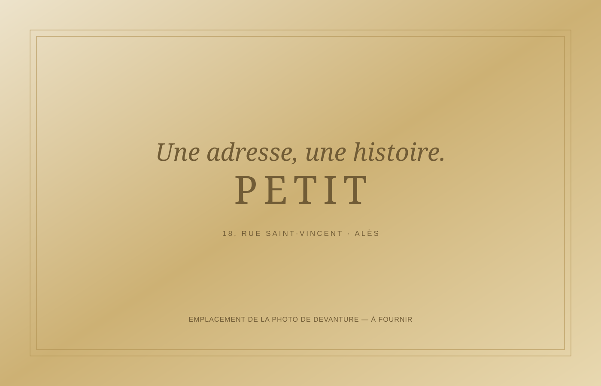

BIJOUTIER & HORLOGER DEPUIS 1948
L'éclat des
instants précieux.
Des bijoux qui vous ressemblent.
Des montres qui traversent le temps.
PRX · POWERMATIC 80
L'ALLURE INTEMPORELLE01 — LA MAISON PETIT
UNE HISTOIRE DE TRANSMISSIONVotre bijoutier
à Alès.
Depuis 1948.
Il y a les bijoux que l'on porte.
Et ceux qui racontent une histoire.
Créée en 1948 par Alexandre Petit, notre maison familiale perpétue à Alès une passion pour les bijoux, les pierres précieuses et l'horlogerie. De Michel à Cyril Petit, cette histoire se transmet de père en fils.
Au 18 rue Saint-Vincent, découvrez un univers de montres et de bijoux, un atelier de création et un service de réparation. Une adresse pour choisir une pièce, donner vie à une envie ou prendre soin de ce qui vous est cher.
Parlons de votre envie ↗02 — UNE ADRESSE À ALÈS
Poussez la porte.
Le reste se raconte ici.
18, rue Saint-Vincent
30100 Alès

03 — PRENONS LE TEMPS
Un projet.
Une envie.
Une rencontre.
Pour un conseil, une création ou une réparation,
échangeons autour de ce qui compte pour vous.